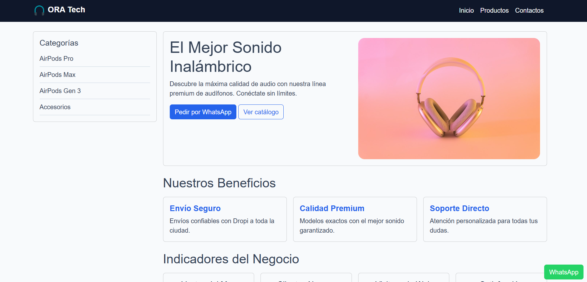
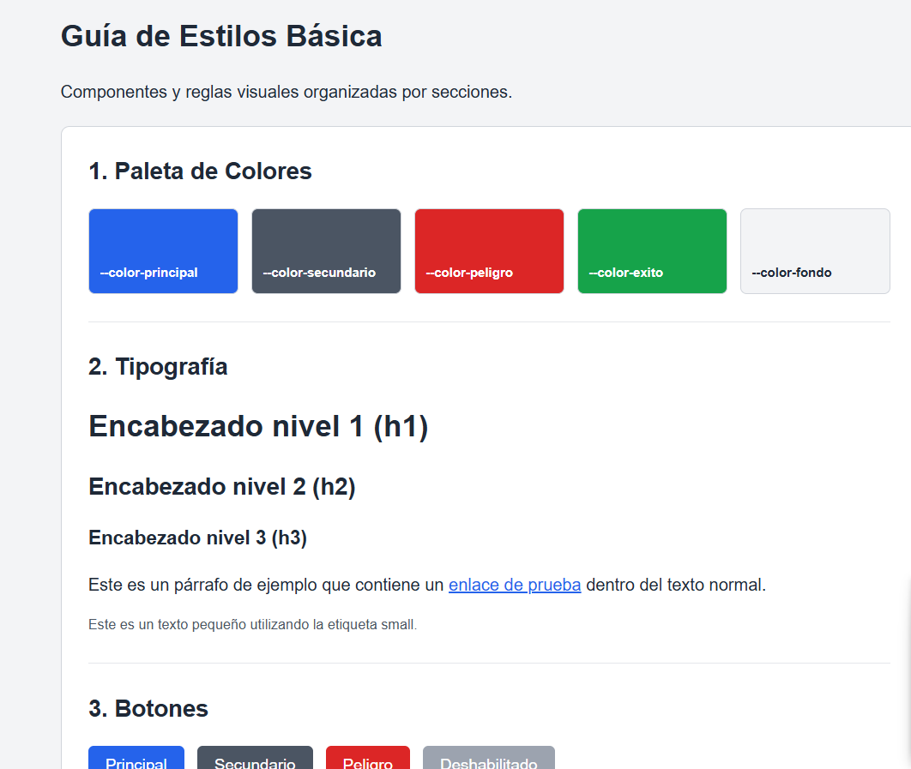
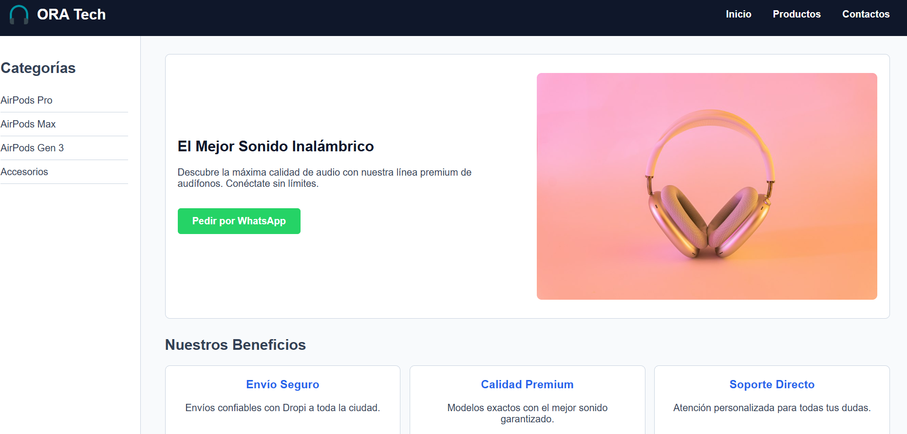
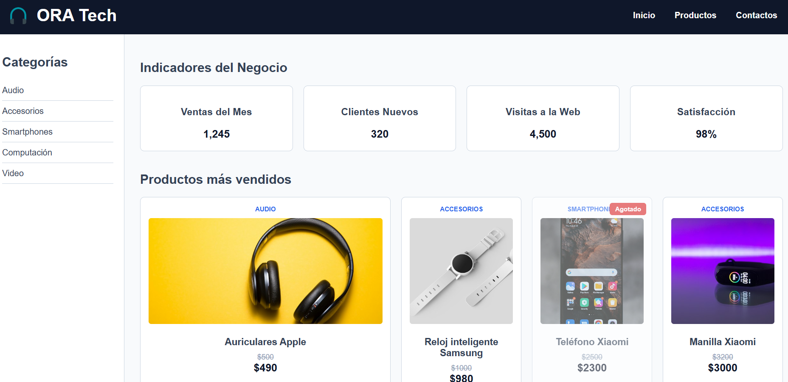
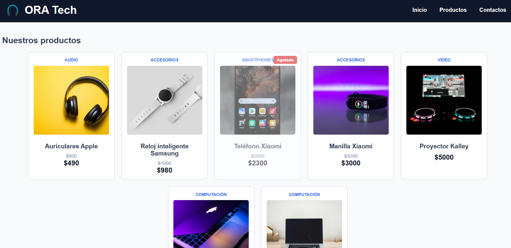
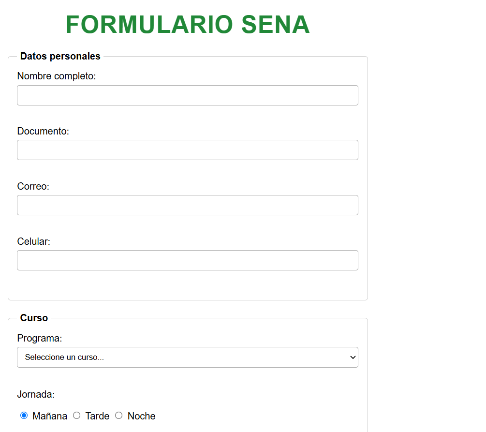

Construyendo interfaces web limpias, semánticas y funcionales.
Soy Santiago Ortiz Zárate, aprendiz de Análisis y Desarrollo de Software (ADSO). Aquí documento la evolución técnica de mis retos prácticos en frontend y arquitectura web.
ENFOQUE PRINCIPAL
HTML5 Semántico, CSS3 Grid/Flexbox y JS
FORMACIÓN ACTUAL
Tecnólogo ADSO — SENA
REPOSITORIO ACTIVO
GitHub Pages · Despliegue continuo
01 / SELECCIÓN DE RETOS
Proyectos destacados
Selección de mis mejores entregas prácticas, cada una con vista desplegada en vivo y acceso directo al código fuente en GitHub.





02 / PERFIL
Sobre mí
Aprendiz de Análisis y Desarrollo de Software (ADSO) en el SENA, enfocado en convertir requerimientos reales en productos digitales bien estructurados.
Mi enfoque combina la disciplina técnica del desarrollo web —HTML5 semántico, CSS3 moderno, JavaScript y modelado de bases de datos relacionales— con experiencia práctica en comercio electrónico y operación de proyectos. Además, cuento con dominio fluido del inglés tras residir tres años en Estados Unidos, lo que me permite trabajar directamente con documentación técnica y estándares internacionales.
03 / CONTACTO
Conversemos sobre código o proyectos
Abierto a oportunidades de práctica, colaboración en desarrollo web y proyectos freelance. Respondo directamente por correo, WhatsApp o LinkedIn.